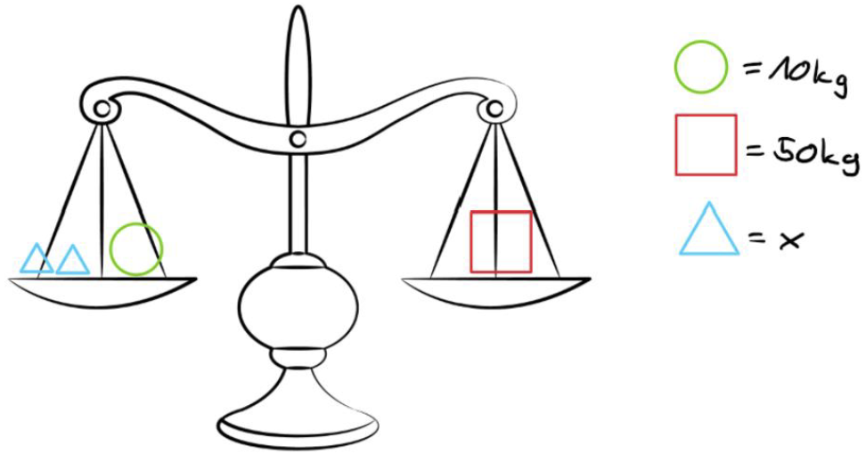
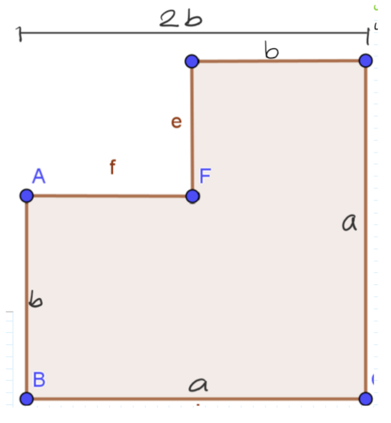
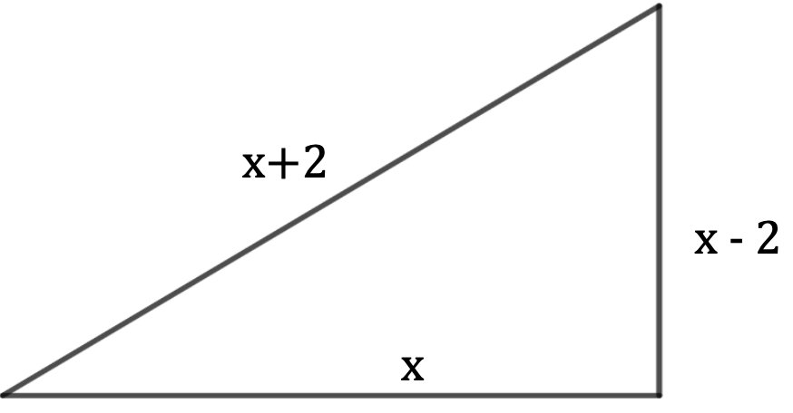

Lies die Aufgabenstellungen richtig durch! Der Taschenrechner darf bei diesem Leistungsnachweis nicht benutzt werden. Zeit: 45min
1.) Stelle den Term möglichst einfach dar. Wenn du ihn umformen kannst, dann forme um.
Für jede korrekte Lösung 0.25P …/1.5P
- \(a+a+2=\)
- \(a \cdot a \cdot a =\)
- \(a\cdot a \cdot b \cdot 3 \cdot 3 =\)
- \(3(a+b)=\)
- \(a(a-bc+d)=\)
- \(\frac{6ab}{2ac}\)
2.) Löse folgende Klammern mithilfe der binomischen Formeln und schreibe die entstandene quadratische Gleichung auf.
Für jede korrekte Lösung gibt es jeweils 0.5P …/2P
- \((x+2)^2=\)
- \((2x− 5)^2 =\)
- \((x+3)(x-2)=\)
- \((y-x)^2\)
3.) Zeige, welcher der folgenden Werte eingesetzt werden sollte, damit die Gleichung erfüllt ist.
Pro Teilaufgabe gibt es einen Punkt. …/3P
- \(\{-5, 3, 7.5, -3, 8\} \quad x + 5 = 2x + 8\)
- \(\{1,2,3,5,-10,-3\} \quad x^2 + 5 = 2(−x + 4)\)
- \(\{1,17,23,\mathbb{R}\} \quad 15 + (x + 7)2 = (x + 8)2 − 2x\)
4.) Berechne x in den folgenden Gleichungen:
0.5P für jede korrekte Lösung …/2P
- \(2ùë• + 5 = 15\)
- \(\frac{x}{7} + 3 = 35\)
- \(ùë•(ùë• + 2) − 23 = x^2\)
- \(\frac{24000}{6000}= x^2\)
5.) Du hast eine Waage im Gleichgewicht. Auf der rechten Seite hast du einen Block, welcher 50kg schwer ist. Auf der linken Seite hast du eine Kugel, welche 10kg schwer ist und zwei Dreiecke, welche eine Masse x besitzen.
Stelle eine Gleichung auf, die das Gleichgewicht der Waage beschreibt und löse diese nach x auf.
1.0P für das richtige Aufstellen der Gleichung und 0.5P für die richtige Lösung von x. …/1.5P

6.) Die Wiese von Frau Müller hat folgende Form.

- Schreibe einen Term auf, mit dem du den Umfang berechnen kannst.
- Schreibe einen Term auf, mit dem du die Fläche berechnen kannst.
- Setze die Zahlen in die Terme von Aufgabe a und b ein und berechne den Umfang und die Fl√§che von Frau M√ºllers Wiese. \(ùëé = 6; ùëè = ùëé\)
Solltest du bei a und b keine L√∂sungen erhalten haben, dann rechne mit folgenden Gleichungen weiter. Umfang: \(2ùëè + ùëé =\) Fl√§che: \(\frac{b^2}{2}\)
7.) (Spez Sek) Das abgebildete rechtwinklige Dreieck hat 3 Seiten. Es besitzt eine Länge x, eine Höhe von (x-2) und eine Hypotenuse von (x+2). Berechne alle Seitenlängen. 1.5P für den Lösungsweg und 0.5P für die richtigen Resultate. …/2P

Ansatz: Der Satz von Pythagoras.
3.) Berechne jeweils alle Lösungen für x auf dem Zusatzblatt. Schreibe bei der Berechnung alle Zwischenschritte auf. (Sek+) Jeweils 0.5P für den korrekten Lösungsweg und 0.5P für die richtigen Resultate. …/2P
a.) \(x^2 − 5ùë• − 24 = 0\) b.) \(x^2 − ùë• + 1 = − \frac{2}{5}x+\frac{3}{5}\)
Wiederverwendung
Zitat
@online{küng2024,
author = {Küng, Liv and Grossenbacher, David and Javor, Emil and
Thambythurai, Anrushen},
title = {Leistungsnachweis},
date = {2024-04-26},
url = {https://PHBern-RConrardy.github.io/gitgud//beurteilung/math_07_zahl_variable_02.html},
langid = {de}
}